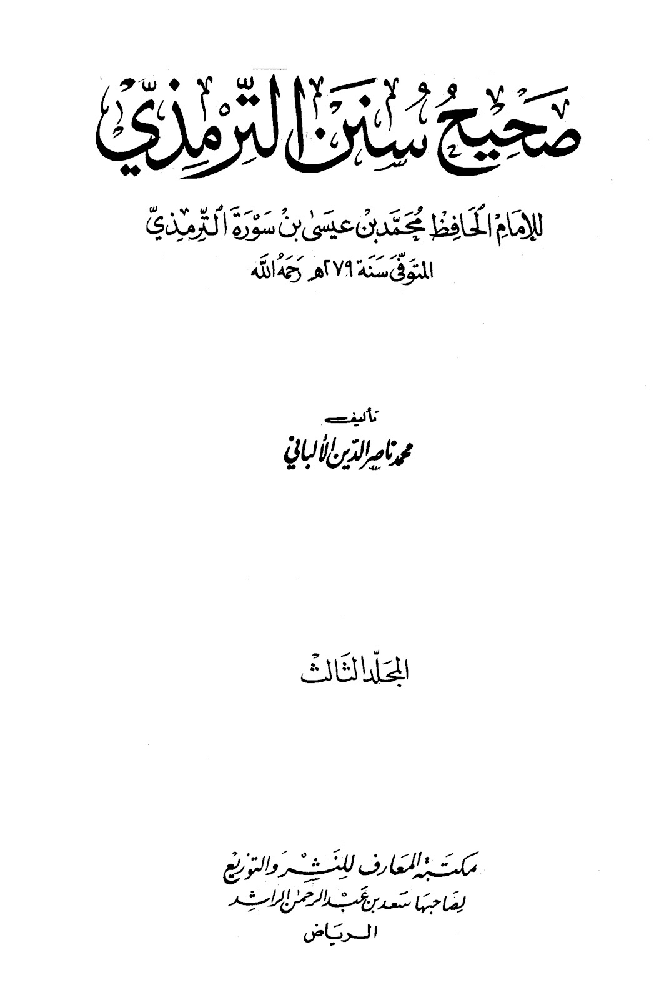
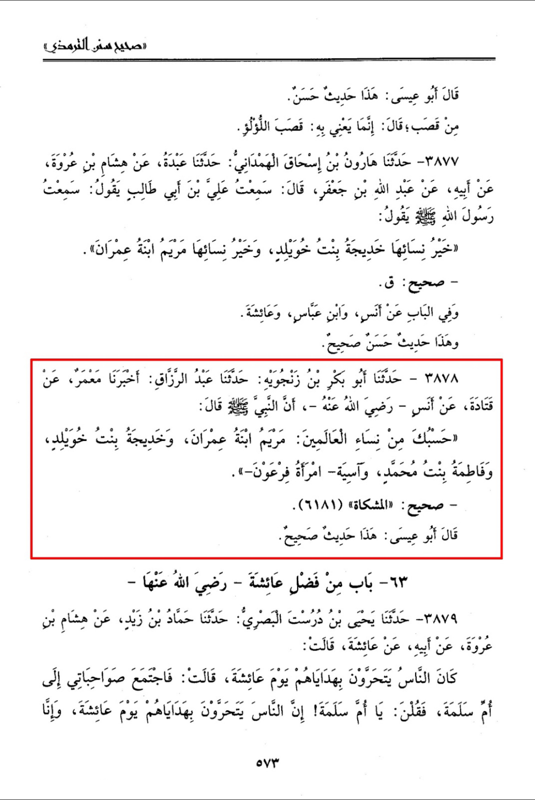
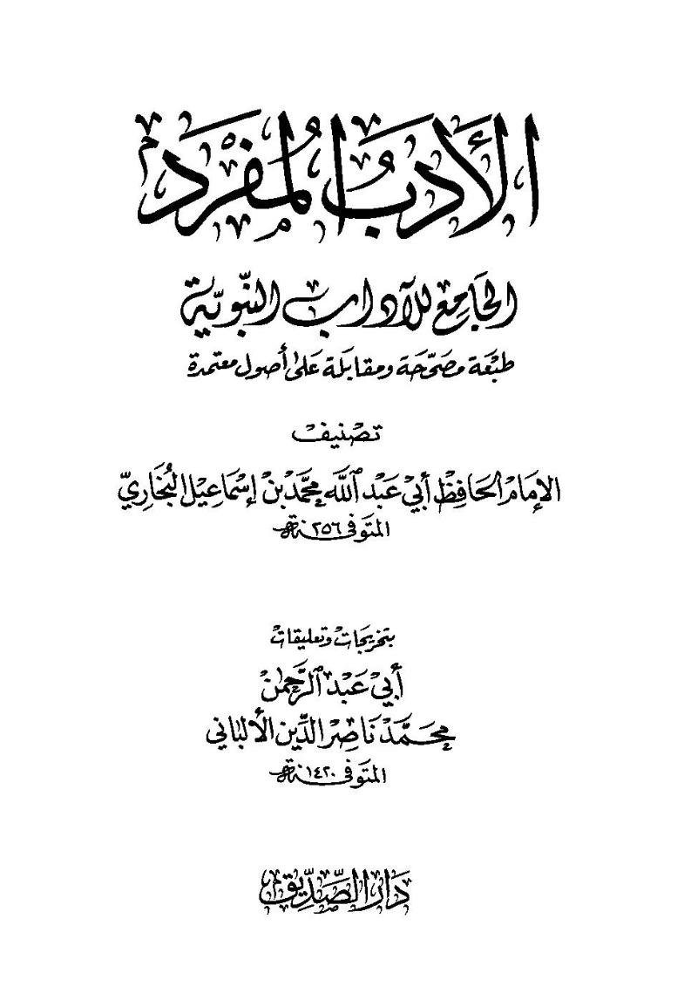
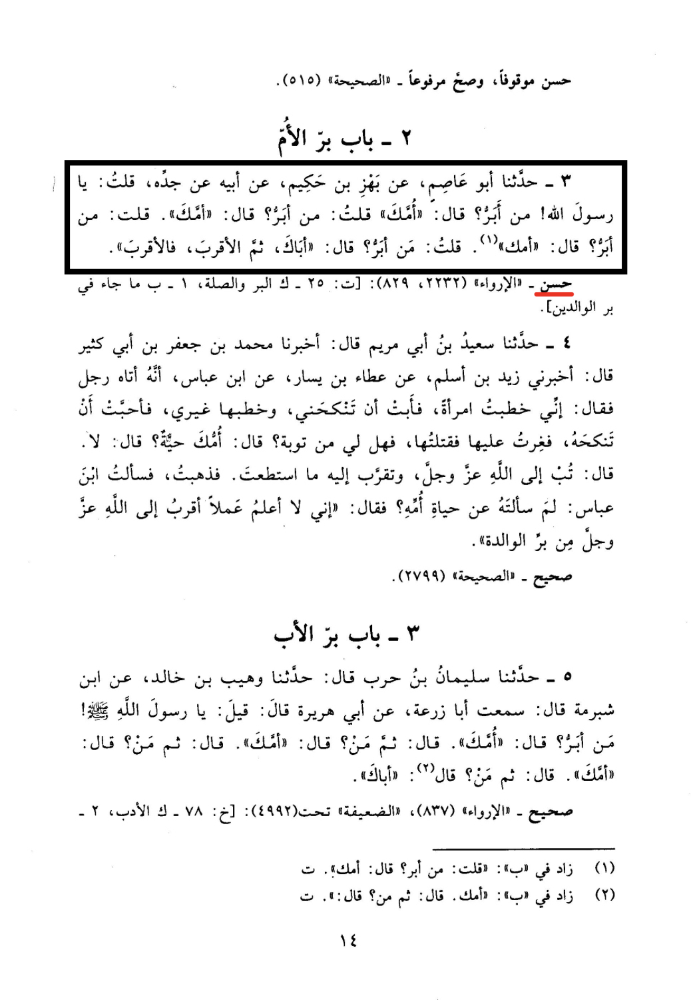
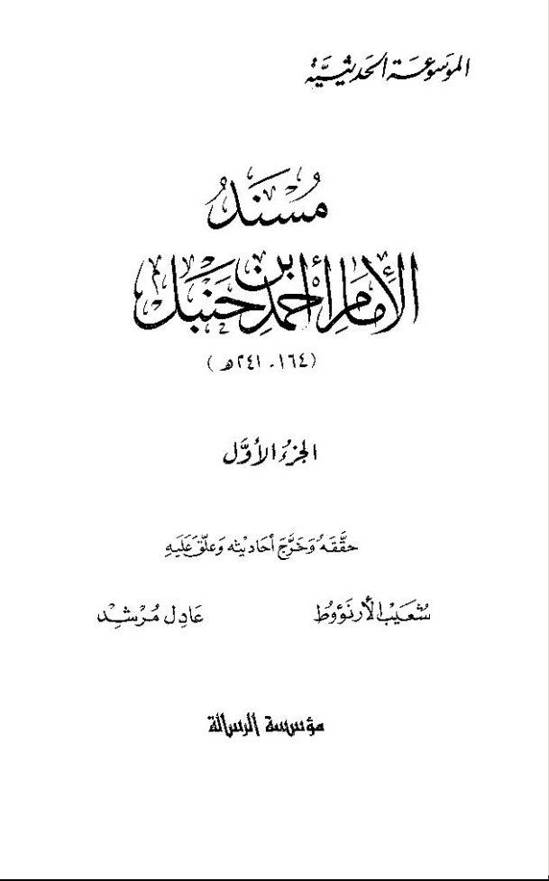
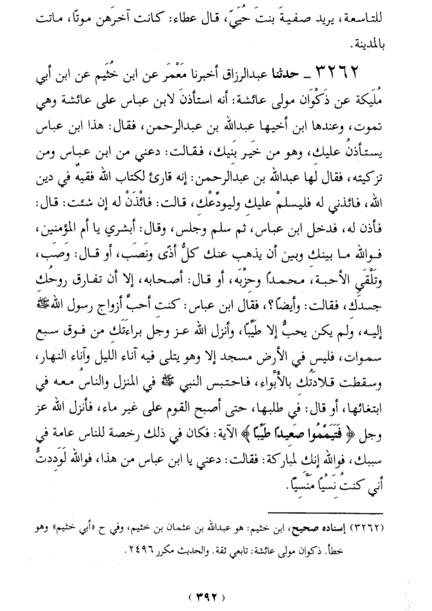

Narrated Anas [may Allah be pleased with him]:
that the Prophet (ﷺ) said: "Sufficient for you among the women of mankind are Mariam bint 'Imran, Khadijah bint Khuwailid,
Fatimah bint Muhammad and Asiyah the wife of Fir'awn."


"I asked, 'Messenger of Allah, to whom should I be dutiful?' 'Your mother,' he replied 3x. 'Your mother,' then I asked, 'Then to whom should I be dutiful?' 'Your father,'.
حَدَّثَنَا أَبُو عَاصِمٍ، عَنْ بَهْزِ بْنِ حَكِيمٍ، عَنْ أَبِيهِ، عَنْ جَدِّهِ، قُلْتُ: يَا رَسُولَ اللهِ، مَنْ أَبَرُّ؟ قَالَ: أُمَّكَ، قُلْتُ: مَنْ أَبَرُّ؟ قَالَ: أُمَّكَ، قُلْتُ: مَنْ أَبَرُّ؟ قَالَ: أُمَّكَ، قُلْتُ: مَنْ أَبَرُّ؟ قَالَ: أَبَاكَ، ثُمَّ الأَقْرَبَ فَالأَقْرَبَ.
الأدب المفرد [٣]]


Ibn Abbas عليه السلام said to Aisha عليها السلام:
“You were the most beloved of the women of the Messenger of Allah ﷺ, and he would not love except that which was good),
and Allah sent down wahy of your innocence from above the seven heavens.”